ខេត្តនៅក្នុងប្រទេសកម្ពុជា
សូមស្វាគមន៏មកកាន់ខេត្តប៉ៃលិន
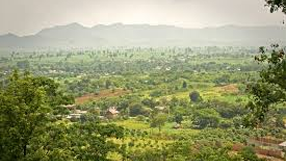
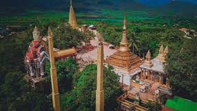
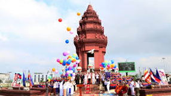
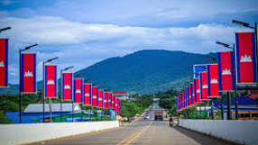
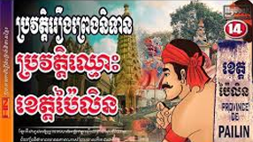
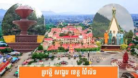
ខេត្តប៉ៃលិនមានប្រវត្តិសាស្រ្តដ៏សម្បូរបែប និងស្មុគស្មាញ ជាពិសេសគឺការជាប់ទាក់ទងយ៉ាងជិតស្និទ្ធជាមួយ ធនធានត្បូងដ៏មានតម្លៃ និង របបខ្មែរក្រហម។
១. ដើមកំណើត និងយុគសម័យបុរាណ
អាណាចក្រខ្មែរ និងការគ្រប់គ្រងបរទេស: ប៉ៃលិនធ្លាប់ជាផ្នែកមួយនៃអាណាចក្រខ្មែរដ៏មានឥទ្ធិពល ប៉ុន្តែក្រោយមកតំបន់នេះត្រូវបានដណ្ដើមកាន់កាប់ដោយកងទ័ពភូមាក្នុងឆ្នាំ ១៥៥៨ ហើយក្រោយមកទៀតត្រូវបានគ្រប់គ្រងដោយ សៀម (ថៃ) រហូតដល់ឆ្នាំ ១៩០៧។ ប៉ៃលិនត្រូវបានប្រគល់មកឱ្យកម្ពុជាវិញបន្ទាប់ពីមានកិច្ចព្រមព្រៀងនានា។
សហគមន៍កូឡា (Kula): នៅក្នុងអំឡុងចុងទសវត្សរ៍ឆ្នាំ ១៨០០ តំបន់ប៉ៃលិនបានទាក់ទាញ ជនអន្តោប្រវេសន៍សាន និងឈ្មួញភូមា ដែលមកជីក ត្បូងទទឹម (Ruby) និង ត្បូងកណ្ដៀង (Sapphire) ដ៏សម្បូរបែប។ ជនជាតិទាំងនេះត្រូវបានគេស្គាល់ថាជា ជនជាតិកូឡា ហើយពួកគេបាននាំមកនូវវប្បធម៌ និងស្ថាបត្យកម្មដែលមានលក្ខណៈខុសប្លែកពីវប្បធម៌ខ្មែរភាគច្រើន។
មជ្ឈមណ្ឌលត្បូង: មុនសម័យខ្មែរក្រហម ប៉ៃលិនគឺជានគរត្បូងពេជ្រដ៏ល្បីល្បាញ ដែលនាំឱ្យទីក្រុងនេះមានភាពរុងរឿង និងជាមជ្ឈមណ្ឌលពាណិជ្ជកម្មដ៏សំខាន់។
២. ប៉ៃលិនក្នុងសម័យសង្គ្រាម និងខ្មែរក្រហម
ប្រវត្តិសាស្រ្តថ្មីៗរបស់ប៉ៃលិន គឺមិនអាចកាត់ផ្តាច់ពីរបបខ្មែរក្រហមបានទេ៖
ការត្រួតត្រាដោយខ្មែរក្រហម: ដោយសារតែសម្បូរទៅដោយធនធានត្បូង និងឈើ តំបន់ប៉ៃលិនគឺជាទីតាំងសំខាន់ដំបូងគេដែលត្រូវបាន ខ្មែរក្រហម វាយកាន់កាប់នៅដើមទសវត្សរ៍ឆ្នាំ ១៩៧០។
មូលដ្ឋាន និងប្រភពចំណូល: បន្ទាប់ពីខ្មែរក្រហមត្រូវបានវៀតណាមវាយទម្លាក់នៅឆ្នាំ ១៩៧៩ ពួកគេបានដកថយទៅតំបន់ព្រំដែនភាគខាងលិច ហើយ ប៉ៃលិន រួមជាមួយអន្លង់វែង បានក្លាយជា បន្ទាយយោធាចុងក្រោយ និង ប្រភពធនធាន ដ៏សំខាន់របស់ចលនានេះ។
ខ្មែរក្រហមបានប្រើប្រាស់ ចំណូលពីការជីកត្បូង និង ការកាប់ឈើ ដែលលក់ទៅឱ្យក្រុមហ៊ុនថៃ ដើម្បីផ្គត់ផ្គង់កងទ័ព និងធ្វើសង្គ្រាមទ័ពព្រៃ។
ការបញ្ចប់សង្គ្រាម: ប៉ៃលិនបាននៅក្រោមការគ្រប់គ្រងរបស់ខ្មែរក្រហមរហូតដល់ចុងទសវត្សរ៍ឆ្នាំ ១៩៩០។ នៅឆ្នាំ ១៩៩៦ មានការបែកបាក់ផ្ទៃក្នុង និងការចុះចូលរបស់មេដឹកនាំសំខាន់ៗមួយចំនួន (ដូចជា អៀង សារី) ដែលនាំឱ្យតំបន់នេះចាប់ផ្តើមវិលត្រលប់ទៅរកការគ្រប់គ្រងរបស់រដ្ឋាភិបាលកណ្តាលវិញ។ មេដឹកនាំខ្មែរក្រហមជាន់ខ្ពស់ និងមន្ត្រីមួយចំនួនបានមកតាំងទីលំនៅ និងរស់នៅទីនេះបន្ទាប់ពីការបញ្ចប់សង្គ្រាម។
៣. ការបង្កើត និងការអភិវឌ្ឍខេត្ត
ការក្លាយជាខេត្ត: ពីមុន ប៉ៃលិនស្ថិតនៅក្រោមការគ្រប់គ្រងរបស់ខេត្តបាត់ដំបង។ នៅក្នុងឆ្នាំ ២០០១ ប៉ៃលិនត្រូវបានដំឡើងឋានៈជាក្រុង និងតំបន់អភិវឌ្ឍន៍ស្វយ័ត។ ក្រោយមក នៅក្នុងខែធ្នូ ឆ្នាំ ២០០៨ ក្រុងប៉ៃលិនត្រូវបានប្តូរឈ្មោះជា ខេត្តប៉ៃលិន ដែលមានថ្នាក់ស្មើនឹងរាជធានី ខេត្តដទៃទៀត។
ស្ថានភាពបច្ចុប្បន្ន: បច្ចុប្បន្ន ប៉ៃលិនត្រូវបានស្គាល់ថាជាខេត្តមួយដែលមានធនធានកសិកម្មសំខាន់ៗ (ដូចជាដំឡូងមី និងស្វាយចន្ទី) និងកំពុងអភិវឌ្ឍវិស័យទេសចរណ៍ បើទោះបីជាតំបន់នេះនៅតែមានបញ្ហាប្រឈមជាមួយ គ្រាប់មីន និងសំណល់សល់ពីសង្គ្រាមក៏ដោយ។
សព្វថ្ងៃ ខេត្តសៀមរាបជាគោលដៅទេសចរណ៍សំខាន់បំផុតមួយនៃអាស៊ីអាគ្នេយ៍ មានទាំងអារម្មណ៍ប្រវត្តិសាស្ត្រ វប្បធម៌ និងសិល្បៈបុរាណដែលបន្តរស់នៅរហូតមកដល់សព្វថ្ងៃ។
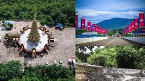
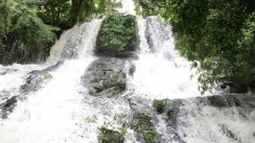
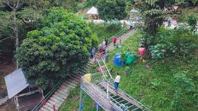
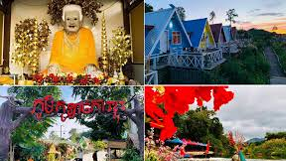
១. តំបន់ទេសចរណ៍វប្បធម៌ និងប្រវត្តិសាស្ត្រ
ភ្នំយ៉ាត (Phnom Yat)
លក្ខណៈពិសេស: ជាភ្នំតូចមួយដែលលយចេញពីទីប្រជុំជនប៉ៃលិន។ វាត្រូវបានគេចាត់ទុកថាជាទីតាំងសក្ការៈបូជា និងជាទីកន្លែងដ៏សំខាន់សម្រាប់សហគមន៍ កូឡា ដែលជាជនជាតិដើមភាគតិចដែលរស់នៅទីនោះ។
អ្វីដែលត្រូវមើល: នៅលើកំពូលភ្នំមាន វត្តភ្នំយ៉ាត ដែលមានព្រះវិហារ និងសំណង់ផ្សេងៗដែលមានរចនាបថសិល្បៈចម្រុះ រួមទាំងរូបសំណាកដ៏ធំរបស់ យាយយ៉ាត ដែលអ្នកស្រុកជឿថាជាអ្នកថែរក្សាភ្នំនេះ។
ចំណុចបន្ថែម: ពីលើភ្នំនេះ អ្នកអាចគយគន់ទេសភាពជុំវិញក្រុងប៉ៃលិន និងជួរភ្នំដងរែកដ៏ស្រស់ស្អាត។
ភ្នំកុយ (Phnom Koy)
លក្ខណៈពិសេស: ភ្នំនេះត្រូវបានគេស្គាល់ដោយសារមានរូបសំណាក ព្រះពុទ្ធបដិមា ដ៏ធំមួយ។
ចំណុចទាក់ទាញ: គឺជាកន្លែងមួយដែលត្រូវបានកសាងឡើងដើម្បីគោរពបូជា និងទាក់ទាញអ្នកកាន់ព្រះពុទ្ធសាសនា។
២. តំបន់ទេសចរណ៍ធម្មជាតិ
ទឹកធ្លាក់បា៉ហុយ (Bahuy Waterfall)
លក្ខណៈពិសេស: ជាទឹកធ្លាក់ដ៏ល្បីមួយក្នុងចំណោមទឹកធ្លាក់ដែលមាននៅប៉ៃលិន ដែលមានទេសភាពព្រៃឈើ និងល្បាក់ទឹកធ្លាក់ជាដំណាក់ៗ។
សកម្មភាព: ភ្ញៀវទេសចរអាចទៅលេងកម្សាន្ត ងូតទឹក ថតរូប ឬរៀបចំពិកនិចលក្ខណៈគ្រួសារ។
តំបន់ដីសម្បូរត្បូង (អតីតកន្លែងជីកត្បូង)
លក្ខណៈពិសេស: ទោះបីជាការជីកត្បូងមិនសូវមានទ្រង់ទ្រាយធំដូចពីមុនក៏ដោយ តំបន់ខ្លះនៅតែបង្ហាញអំពីប្រវត្តិសាស្ត្រនៃការជីកត្បូងរបស់ខេត្ត។
អ្វីដែលត្រូវមើល: អ្នកអាចឃើញពីទិដ្ឋភាពដែលគេធ្លាប់ជីកកកាយរកត្បូង និងមានឱកាសទិញ ត្បូងទទឹម ឬត្បូងកណ្ដៀង ពីឈ្មួញក្នុងតំបន់ (ប៉ុន្តែត្រូវប្រយ័ត្នចំពោះគុណភាព និងតម្លៃ)។
៣. ទីផ្សារ និងពាណិជ្ជកម្ម
ទីរួមខេត្តប៉ៃលិន
ទីផ្សារប៉ៃលិន: ជាទីតាំងដ៏ល្អសម្រាប់សាកល្បង ម្ហូបអាហារក្នុងតំបន់ និងទិញ ផលិតផលកសិកម្ម (ដូចជា ស្វាយចន្ទី ឬដំឡូងមី)។
វប្បធម៌កូឡា: អ្នកអាចសង្កេតឃើញពីឥទ្ធិពលវប្បធម៌កូឡានៅតាមវត្តអារាម និងទម្លាប់រស់នៅខ្លះៗរបស់ប្រជាជន។
ℹ️ ចំណុចសំខាន់ដែលត្រូវដឹង
ដោយសារប៉ៃលិនជាអតីតតំបន់សមរភូមិចុងក្រោយនៃសង្គ្រាមស៊ីវិលកម្ពុជា៖
សុវត្ថិភាពមីន: ទោះបីមានការបោសសម្អាតច្រើនក៏ដោយ អ្នកត្រូវ ប្រុងប្រយ័ត្នខ្ពស់ ជានិច្ច ហើយគួរទៅតែកន្លែងដែលបានកំណត់ និងបោសសម្អាតរួចហើយប៉ុណ្ណោះ។ កុំដើរចូលទៅក្នុងព្រៃ ឬវាលស្រែដែលមិនស្គាល់ច្បាស់។
ការធ្វើដំណើរ: ផ្លូវជាតិលេខ ៥៧ ដែលតភ្ជាប់ពីបាត់ដំបងទៅប៉ៃលិនត្រូវបានជួសជុល ដែលធ្វើឱ្យការធ្វើដំណើរមានភាពងាយស្រួលជាងមុន។
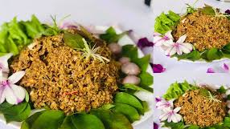


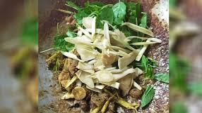
ម្ហូបនៅក្នុងខេត្តប៉ៃលិនមានលក្ខណៈពិសេសប្លែកពីខេត្តដទៃ ដោយសារមានឥទ្ធិពលវប្បធម៌ខ្មែរ រួមផ្សំជាមួយវប្បធម៌ ជនជាតិកូឡា (Kola) ដែលមានដើមកំណើតនៅភូមា (មីយ៉ាន់ម៉ា) និងឥទ្ធិពលពីប្រទេសជិតខាងដូចជាថៃ។
ម្ហូបពិសេសប្រចាំខេត្តប៉ៃលិន
ម្ហូបដែលល្បីល្បាញជាងគេ និងជាអត្តសញ្ញាណរបស់ខេត្តប៉ៃលិន គឺ មីកូឡា។
១. មីកូឡា (Mee Kola)
អត្ថន័យ: "មីកូឡា" ប្រែថា គុយទាវរបស់ជនជាតិកូឡា។
លក្ខណៈពិសេស: វាជាប្រភេទគុយទាវអង្ករតូចៗ (មីសួ) ដែលមានលក្ខណៈ បួស ឬមានសាច់តិចតួច។ គុយទាវនេះត្រូវបានលាយជាមួយទឹកជ្រលក់ផ្អែមប្រៃ បន្លែស្រស់ៗ និងគ្រឿងទេសជាច្រើនមុខ។
គ្រឿងផ្សំសំខាន់ៗ: គុយទាវលាយជាមួយទឹកស៊ីអ៊ីវខាប់ ខ្ទឹមសចិញ្ច្រាំបំពង ត្រកួន សណ្ដែកដីលីង គ្រឿងទេស (ដូចជាជីរណា ជីរវ៉ាន់ស៊ុយ) និងជួនកាលមានបង្កងតូចៗ ឬសាច់តិចតួច។ គេច្រើនញ៉ាំវាជាមួយ ជ្រក់ល្ហុង ឬ ជ្រក់ត្រសក់ ដែលមានរសជាតិជូរផ្អែមឆ្ងាញ់។
ប្រភពដើម: ម្ហូបនេះគឺជាកេរដំណែលវប្បធម៌ដែលជនជាតិកូឡាបាននាំចូលមកតាំងពីពួកគេបានមកតាំងទីលំនៅនៅប៉ៃលិនដើម្បីជីកត្បូង។
២. ម្ហូបផ្សេងទៀតដែលល្បីនៅក្នុងតំបន់
ដោយសារខេត្តប៉ៃលិនសម្បូរទៅដោយបន្លែធម្មជាតិ និងអនុផលព្រៃឈើ ម្ហូបប្រចាំតំបន់ខ្លះក៏ត្រូវបានគេស្គាល់ដែរ៖
សម្លម្ជូរដើមចេកព្រៃ: ម្ហូបនេះត្រូវបានគេចាត់ទុកជាម្ហូបពិសេសមួយនៅក្នុងតំបន់ភ្នំខៀវ (ប៉ៃលិន)។ សម្លនេះប្រើ ដើមចេកព្រៃ ជាគ្រឿងផ្សំចម្បង និងមានរសជាតិជូរអែមឆ្ងាញ់។ ពេលខ្លះគេអាចប្រើត្រីសមុទ្រស្ងោរជាទឹកសម្លផងដែរ (ជាលក្ខណៈពិសេសមួយដោយសារប៉ៃលិននៅក្បែរព្រំដែនថៃ)។
ឆាដើមក្រវ៉ាញជាមួយសាច់: ដើមក្រវ៉ាញ គឺជាបន្លែព្រៃធម្មជាតិដែលមានក្លិនឈ្ងុយ និងមានវត្តមាននៅតំបន់ជួរភ្នំដងរែក។ ការយកបន្លែនេះមកឆាជាមួយសាច់ (ដូចជាសាច់ជ្រូក ឬសាច់គោ) គឺជាម្ហូបប្រចាំត្រកូលមួយរបស់អ្នកប៉ៃលិន។
ផ្លែឈើ និងផលិតផលកសិកម្មល្បីៗ
ក្រៅពីម្ហូបអាហារ ប៉ៃលិនក៏ល្បីល្បាញខ្លាំងខាងផលិតផលកសិកម្មដូចជា៖
មៀនប៉ៃលិន (Longan): គឺជាផ្លែឈើដ៏សំខាន់មួយរបស់ខេត្ត ដែលមានកេរ្តិ៍ឈ្មោះល្បីល្បាញដោយសាររសជាតិផ្អែមឆ្ងាញ់ និងត្រូវបានគេដាំដុះយ៉ាងទូលំទូលាយ។
ស្វាយចន្ទី និងដំឡូងមី: ជាដំណាំឧស្សាហកម្មដ៏ធំ ដែលជួយទ្រទ្រង់សេដ្ឋកិច្ចរបស់ខេត្ត។
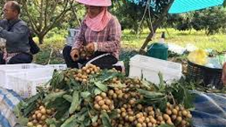
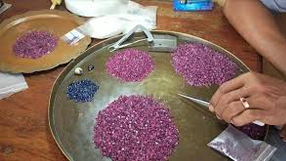
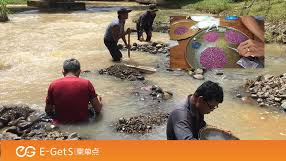
១. ប្រជាជន និងវប្បធម៌ចម្រុះ
ជនជាតិភាគច្រើន: ជនជាតិខ្មែរនៅតែជាប្រជាជនភាគច្រើន ប៉ុន្តែក៏មានវត្តមានសហគមន៍ជនជាតិភាគតិចសំខាន់ៗដែលបន្សល់ទុកពីប្រវត្តិសាស្រ្ត។
ជនជាតិកូឡា (Kola): គឺជាជនជាតិភាគតិចមួយក្រុមដែលមានប្រភពដើមពី ភូមា (មីយ៉ាន់ម៉ា) ដែលបានធ្វើអន្តោប្រវេសន៍មកតាំងទីលំនៅនៅប៉ៃលិនតាំងពីចុងសតវត្សរ៍ទី ១៩ ដើម្បីជីកត្បូង។
ឥទ្ធិពលវប្បធម៌កូឡា: ជនជាតិកូឡាបាននាំមកនូវលក្ខណៈវប្បធម៌ប្លែកៗដូចជា៖
របាំក្ងោកកូឡា ដែលមានក្បាច់រាំស្រដៀងនឹងរបាំភូមា និងថៃ។
ម្ហូបអាហារ ដូចជា មីកូឡា ដែលជាអាហារប្រចាំតំបន់។
ជំនឿ: អ្នកស្រុកប៉ៃលិនគោរពបូជា យាយយ៉ាត នៅលើភ្នំយ៉ាត ដែលជាកន្លែងសក្ការៈមួយដ៏សំខាន់។
លក្ខណៈរស់នៅតាមព្រំដែន: ដោយសារជាប់ព្រំដែនថៃ ភាសា វប្បធម៌ ពាណិជ្ជកម្ម និងរបៀបស្លៀកពាក់ ក៏មានឥទ្ធិពលពីវប្បធម៌ថៃផងដែរ។
២. របៀបរស់នៅ និងមុខរបរ
របៀបរស់នៅរបស់ប្រជាជនប៉ៃលិនបានផ្លាស់ប្តូរពីការពឹងផ្អែកលើការជីកត្បូង មកពឹងផ្អែកលើកសិកម្ម និងពាណិជ្ជកម្ម៖
កសិកម្ម (មុខរបរសំខាន់): ដោយសារដីមានជីជាតិសមរម្យសម្រាប់ដាំដំណាំនៅលើខ្ពង់រាប ប្រជាជនភាគច្រើនប្រកបរបរ កសិករ។ ដំណាំនាំមុខគេគឺ មៀនប៉ៃលិន (ដែលល្បីថាមានគុណភាពល្អ) ដំឡូងមី និង ស្វាយចន្ទី ដែលភាគច្រើននាំចេញទៅប្រទេសថៃ។
អតីតការងារជីកត្បូង: ទោះបីត្បូងត្រូវបានជីកស្ទើរតែអស់ហើយក៏ដោយ ក៏ប្រជាជនខ្លះនៅតែបន្តជីកត្បូងជាលក្ខណៈគ្រួសារនៅតាមភ្នំ ដើម្បីរកប្រាក់ចំណូលបន្ថែម។
ទេសចរណ៍ និងសេវាកម្ម: មុខរបរនៅតំបន់ទីប្រជុំជន គឺការលក់ដូរ និងបម្រើសេវាទេសចរណ៍នៅជុំវិញភ្នំយ៉ាត និងតំបន់អតីតប្រវត្តិសាស្រ្តខ្មែរក្រហម។
៣. បញ្ហាប្រឈមនៃជីវភាព
មីន និងយុទ្ធភណ្ឌមិនទាន់ផ្ទុះ: ជាបញ្ហាធ្ងន់ធ្ងរបំផុតដែលនៅតែបន្តគំរាមកំហែងដល់ជីវិតរស់នៅ និងការអភិវឌ្ឍកសិកម្មនៅតាមតំបន់ជនបទ។
ភាពផុយស្រួយផ្នែកសេដ្ឋកិច្ច: ជីវភាពរស់នៅពឹងផ្អែកយ៉ាងខ្លាំងលើតម្លៃកសិផលដែលប្រែប្រួលតាមទីផ្សារអន្តរជាតិ។
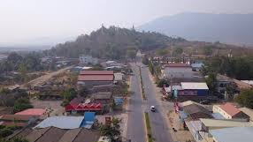
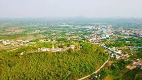
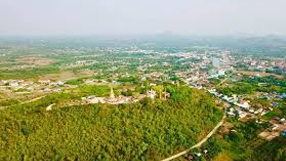
សេដ្ឋកិច្ច និងការអភិវឌ្ឍន៍ខេត្តប៉ៃលិនមានការវិវត្តគួរឱ្យកត់សម្គាល់ ពីអតីតកាលដែលពឹងផ្អែកលើការជីកត្បូង និងសង្គ្រាមស៊ីវិល មកជាខេត្តមួយដែលផ្តោតលើ កសិកម្មឧស្សាហកម្ម និង សេដ្ឋកិច្ចព្រំដែន។
ទិដ្ឋភាពទូទៅនៃសេដ្ឋកិច្ច
សេដ្ឋកិច្ចប៉ៃលិនមានមូលដ្ឋានគ្រឹះពីរ៖
១. វិស័យកសិកម្ម និងកសិឧស្សាហកម្ម (មូលដ្ឋានសំខាន់)
ដោយសារតែប៉ៃលិនភាគច្រើនជាដីខ្ពង់រាប និងមានដីក្រហមសម្បូរសារធាតុចិញ្ចឹម វិស័យនេះបានក្លាយជាកម្លាំងចលករចម្បង៖
ដំណាំល្បី: ខេត្តនេះល្បីល្បាញខ្លាំងខាងដំណាំ មៀនប៉ៃលិន (Longan) ដែលមានគុណភាព និងរសជាតិឆ្ងាញ់។ ការដាំមៀនបាននាំមកនូវចំណូលយ៉ាងសំខាន់។
ដំណាំឧស្សាហកម្ម: ដំណាំផ្សេងទៀតរួមមាន ដំឡូងមី និង ស្វាយចន្ទី ដែលជាធម្មតាត្រូវនាំចេញទៅប្រទេសជិតខាង (ភាគច្រើនទៅកាន់ប្រទេសថៃ) សម្រាប់ការកែច្នៃបន្ត។
ការនេសាទ និងបសុសត្វ: មានការចិញ្ចឹមសត្វ និងនេសាទជាលក្ខណៈគ្រួសារផងដែរ។
២. វិស័យពាណិជ្ជកម្ម និងសេវាកម្មព្រំដែន
ច្រកទ្វារសេដ្ឋកិច្ច: ប៉ៃលិនមានច្រកព្រំដែនអន្តរជាតិ ផ្សារព្រំ ដែលតភ្ជាប់ទៅខេត្តចន្ទបុរី (ប្រទេសថៃ)។ សកម្មភាពពាណិជ្ជកម្មឆ្លងដែន ការដឹកជញ្ជូនទំនិញ និងលំហូរមនុស្ស គឺជាប្រភពចំណូលដ៏សំខាន់សម្រាប់អ្នករស់នៅក្នុងតំបន់។
ធនធានត្បូង (អតីតកាល): ទោះបីជាការជីកត្បូងលែងជាមុខរបរធំដុំដូចមុនក៏ដោយ ក៏នៅតែមានការលក់ដូរ និងការជីកត្បូងបន្តិចបន្តួច ដែលផ្តល់ឱកាសសេដ្ឋកិច្ចសម្រាប់អ្នកស្រុកមួយចំនួន។
ការអភិវឌ្ឍន៍ និងការស្តារឡើងវិញ
ការអភិវឌ្ឍន៍នៅប៉ៃលិនផ្តោតលើការកសាងហេដ្ឋារចនាសម្ព័ន្ធ និងការលើកស្ទួយជីវភាពអ្នកស្រុកក្រោយសម័យសង្គ្រាម។
១. ហេដ្ឋារចនាសម្ព័ន្ធ
ផ្លូវថ្នល់: ការជួសជុល និងកែលម្អ ផ្លូវជាតិលេខ ៥៧ ដែលតភ្ជាប់ប៉ៃលិនជាមួយខេត្តបាត់ដំបង បានជួយសម្រួលដល់ការដឹកជញ្ជូនកសិផល និងទំនិញយ៉ាងខ្លាំង។
ប្រព័ន្ធធារាសាស្រ្ត: ដោយសារខេត្តនេះមិនសូវមានផ្ទៃដីដាំស្រូវធំដូចខេត្តដទៃ ការអភិវឌ្ឍធារាសាស្ត្រសម្រាប់ដំណាំឧស្សាហកម្មដូចជាមៀន គឺសំខាន់ណាស់។
២. វិស័យទេសចរណ៍
ខេត្តប៉ៃលិនកំពុងព្យាយាមទាក់ទាញភ្ញៀវទេសចរដោយ៖
ទេសចរណ៍ប្រវត្តិសាស្រ្ត: ផ្សព្វផ្សាយតំបន់ដែលជាប់ទាក់ទងនឹង ប្រវត្តិសាស្ត្រខ្មែរក្រហម និងរឿងរ៉ាវនៃសង្គ្រាមស៊ីវិល។
ទេសចរណ៍វប្បធម៌: ការអភិរក្ស និងលើកស្ទួយ វប្បធម៌កូឡា និងតំបន់សាសនាដូចជា ភ្នំយ៉ាត។
បញ្ហាប្រឈមធំៗសម្រាប់ការអភិវឌ្ឍន៍
ទោះបីមានការរីកចម្រើនក៏ដោយ ប៉ៃលិននៅតែប្រឈមនឹងបញ្ហាចម្បងមួយចំនួន៖
គ្រាប់មីន និងយុទ្ធភណ្ឌមិនទាន់ផ្ទុះ (UXO): ដោយសារជាអតីតសមរភូមិប្រយុទ្ធ ការបោសសម្អាតមីននៅតែជាឧបសគ្គធំបំផុតដែលរារាំងដល់ការពង្រីកដីកសិកម្ម និងការសាងសង់ហេដ្ឋារចនាសម្ព័ន្ធ។
ការប្រែប្រួលតម្លៃកសិផល: សេដ្ឋកិច្ចពឹងផ្អែកខ្លាំងលើដំណាំឧស្សាហកម្ម ដែលធ្វើឱ្យកសិករងាយរងគ្រោះដោយសារការប្រែប្រួលតម្លៃទីផ្សារ និងតម្រូវការនាំចេញ។
ការកាប់បំផ្លាញព្រៃឈើ: ធនធានព្រៃឈើត្រូវបានបំផ្លាញយ៉ាងខ្លាំងក្នុងពេលកន្លងមក ជាពិសេសក្នុងសម័យខ្មែរក្រហម ដែលបន្សល់ទុកផលប៉ះពាល់បរិស្ថានដល់បច្ចុប្បន្ន។